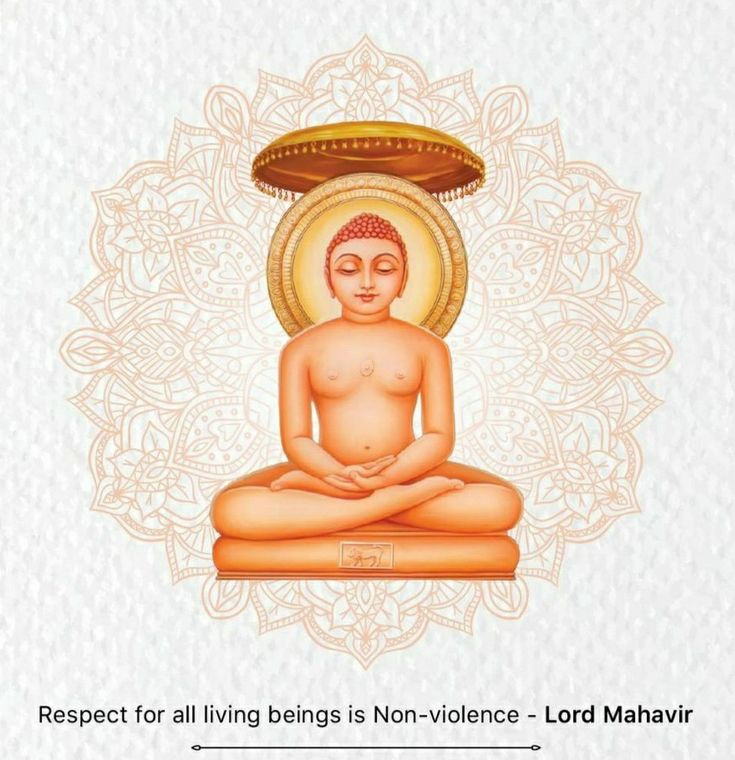

Jainism (pronounced /ˈdʒeɪnɪzəm/ JAY-niz-əm), also known as Jain Dharma, is an ancient Indian religion characterized by three fundamental principles: nonviolence (ahiṃsā), asceticism (aparigraha), and the doctrine of multiple viewpoints (anekāntavāda), which emphasizes the complexity of truth and reality. The spiritual lineage of Jainism is marked by twenty-four Tirthankaras, revered as supreme teachers of dharma. Among them, Rishabhadeva is considered the first Tirthankara, believed to have lived eons ago, while Parshvanatha, the 23rd Tirthankara, is traditionally dated to the 9th century BCE. Mahavira, the 24th and most recent Tirthankara, lived around the 6th or 5th century BCE.
Jainism upholds the concept of an eternal dharma, with the Tirthankaras providing spiritual guidance in every time cycle of the Jain cosmology. Central to Jain philosophy is the notion of bhedavijñāna, which emphasizes a clear understanding of the distinction between the soul (jiva) and non-soul (ajiva) entities. This understanding is vital for recognizing the inherent purity of the soul and its potential for liberation, unburdened by the material and mental aspects that bind it to the cycle of birth and rebirth. Attaining samyaka darśana (right perception or self-realization) is seen as the starting point of one’s spiritual journey toward liberation.
Jain monks and nuns adhere to five main vows: ahiṃsā (non-violence), satya (truthfulness), asteya (non-stealing), brahmacharya (chastity), and aparigraha (non-possessiveness). These vows have profoundly influenced Jain culture, promoting a predominantly lacto-vegetarian lifestyle. The faith's motto, "Parasparopagraho jīvānām" (Souls render service to one another), reflects the interconnected nature of all beings. The Namokar Mantra is the most revered and powerful prayer in Jainism.
As one of the oldest living religions, Jainism has two primary ancient sub-traditions: Digambaras and Śvētāmbaras. These two branches differ in their views on ascetic practices, gender roles, and canonical texts. Śvētāmbaras are further divided into two sub-sects: Deravasi (or Mandirmargis) and Sthānakavasī. Jainism has an estimated four to five million followers worldwide, most of whom reside in India, where the 2011 census recorded approximately 4.5 million Jains. However, significant Jain communities also exist in Canada, the United States, Europe, and Japan, where the faith is experiencing notable growth.
Major Jain festivals include Paryushana and Das Lakshana (periods of spiritual reflection and penance), Ashtanika, Mahavir Janma Kalyanak (the birth anniversary of Mahavira), Akshaya Tritiya, and Dipawali, which is observed as the day Mahavira attained nirvana.